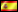
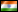
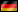
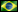
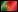
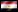
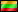

Сборная Украины на WCG2006: Grand Final
Данный креатив приуроченный к прошедшему в Италии финалу WCG2006 призван, в первую очередь провести статистические параллели, взглянуть на пребывание зборной с точки зрения сухих цифр, ну и, конечно, дать свой, по возможности максимально трезвый анализ прошедших событий. Итак…

Counter-Strike
1-е место: Pentagram
2-е место: NiP
3-е место: hoorai
4-е место: NoA
В Италии Украину представляла КС команда из города Харькова- pro100GG (состав команды: Edward, Zeus, Keks, Kane, Razor). Свои игры в групповом этапе команда начала 19.10.2006.
Результаты группового этапа:
 pro100GG--def.--
pro100GG--def.--
x6tence.AMD 16:1 on de_train
pro100GG--lose--Hybrid 14:16 on de_nuke
pro100GG--def.--SkyRiders 16:2 on de_nuke
pro100GG--def.-- Virtus.pro 16:9 on de_dist2
Virtus.pro 16:9 on de_dist2
pro100GG--def.--
ate.in 16:8 on de_inferno
Общий анализ группового этапа:
В первом туре команда из Украины играла с главным фаворитом группы, которого просто задавила моралью и стрельбой, победив с шокировавшим киберспортивных болельщиков счетом. Во втором туре команда из Малайзии победила pro100 c минимальным отрывом виной чему, думается, некоторая недооценка противника. Третья игра проходила с чешской командой, которая не смогла оказать ни малейшего сопротивления. Судьба выхода в 1/8 финала решалась в матче с русской командой Virtus.pro, в котором мы поначалу уступали, однако после счета 6:1 произошел перелом, pro100GG вырывает победу. В четвертом матче соперником украинской команды была команда из Индии, которая к тому моменту проиграла все свои игры в группе и не смогла оказать нормального сопротивления. Pro100GG выходит с первого места из группы, став первой командой из Украины за 6 лет, которая смогла это сделать. На втором месте в группе вышла русская команда virtus.pro с результатом 4 победы и одно поражение.
1/8 финала:
pro100GG--lose-- Team 3D 0:2 (10:16; 1:16) on de_dust2, de_inferno
Team 3D 0:2 (10:16; 1:16) on de_dust2, de_inferno
Анализ 1/8 финала:
В 1/8 финала команда из Украины играла с победителем WCG2004/2005- командой 3D из США. Судя по комментариям самой команды из Украины, определяющим для их поражения стал фактор неожиданного соперника (изначально считалось, что pro100 будет играть против немецкой команды mousesport (которая, кстати, с ОГРОМНЫМ напрягом выиграла у напарников pro100 по группе)) и неопределенность с выбором карты. Вероятно так же сказалось отсутствие опыта участия в играх такого уровня. Что касается самой игры, то порой pro100 допускали нетипиынче для них ошибки, терялись в тактике, а иногда и проигрывали по стрельбе, чего обычно за ними не водилось. В любом случае команда показала себя достаточно хорошо и главное определила потенциал для лучшего выступления на дальнейших чемпионатах.
Starcraft: BW
1-е место: iloveoov
2-е место: July[z-zone]
3-е место: Midas[gm]
4-е место: Legendary
В качестве представителя Украины на финале в номинации по первой Великой стратегии Blizzard поехал заслуженный одесский ветеран старкрафта- White-Ra.
Результаты группового этапа:
White-Ra--def.--maix on PA
White-Ra--def.--Raven_ on Azalea
White-Ra--lose--Testie on Gaia
White-Ra--def.--ToT)Squall on PA
White-Ra--def.--Slash on Gaia
Общий анализ группового этапа:
У нашего старкрафтера группа выпала крайне сложная, среди соперников не было слабых игроков, все имели сови достижения и каждый по своему претендовал на выход из группы. В первой игре Ра победил одного из самых слабых игроков в группе- словака. Вторым был очень жесткий игрок из Польши, который в своей стране считается одним из лучших, однако и в этой партии украинец смог одержать победу. Матч с канадцем проходил на самой слабой карте Ра и к сожалению был проигран. Четвертая игра с испанцем, выступающим за известнейший клан- ТоТ был фактически за выход из группы. Победив испанца и не встретив особенного сопротивления со стороны колумбийца Ра проходит в сингловый тур.
1/8 финала:
White-Ra--lose--iloveoov 0:2
Анализ 1/8 финала:
Просто поразительный нефарт для украинского игрока. Матч уже в первом туре сингла- против корейца, считающегося одним из лучших на родине. Хоть и не без борьбы, но довольно легко проиграв первую карту Ра просто упустил победу во второй, которая большую часть времени шла под его диктовку. Важным моментом стала смерть ривера в середине игры, именно его Ра и назвал определяющим для победы корейца. Сам кореец после игры признался, что немаловажной частью его победы стало везение. Без сомнения Ра заслуживает намного большего, нежели топ-16 мира. Для доказательства данного факта, прошу обратить внимание на итоговый результат корейца. Возможно, попадись Ра иной соперник, и он прошел бы дальше. Но сетка была безжалостна…
Fifa 2006
1-е место:
SK.hero
2-е место:ovvy
3-е место:
x4.Alexx
4-е место:Janthana
В данной номинации Украину представлял молодой киевлянин- Walkman. Шансы Валкмэна на победу оценивались хотя и не высоко, но оценивались, а значит имелись. Вообще после провального выступления «футболиста» на WCG2005 Валкмэну предстояло доказать, что оргкомитет не зря делает ставку на «Фифу». Своей цели молодой киевлянин достиг…
Результаты группового этапа:
Walkman--def.--Protos_Janela
Walkman--draw--E-scout24_choco 3:3
Walkman--def.--BCHCN 3:2
Walkman--def.--Mario 7:2
Общий анализ группового этапа:
После «халявной» первой игры во второй Валкмэн встретился с фаворитом группу- немцем, у которого даже выигрывал по ходу партии, но итоговый результат- ничья. Игра с китайцем получилась решающей, украинец проигрывал, но под конец матча в напряженной борьбе смог вырвать победу. После двух побед и одной ничьей все на что годился австриец Марио- это на порчу нервов, но даже этого организовать не смог. Победа украинца с крупным счетом и выход в сингл со второго места.
1/16 финала:
Walkman--def.--yzw42 2:0
Анализ 1/16 финала:
Румын, с которым Валкмэну выпало играть в первом туре не смог составить нашему игроку конкуренции и проиграл обе игры с большим счетом. Основной причиной подобной легкой победы наш игрок назвал формацию противника. Валкмэн без труда проходит дальше…
1/8 финала:
Walkman--def.--el-Diablo 2:1
Анализ 1/8 финала:
В 1/8 Валкмэн играл с чехом. После первой легкой победы чех практически в начале второй игры смог забить гол, после чего полностью сосредоточился на обороне. Обидно, но эту глухую защиту наш игрок, имевший колоссальное игровое преимущество, так и не смог пробить, счет стал 1:1. Третья игра получилась сравнительно равная, но под конец игровое преимущество Валкмэна дало о себе знать, он вырывает победу и проходит в 1/4.
1/4 финала:
Walkman--lose--
x4.Alexx 0:2
Анализ 1/4 финала:
Увы, но на противостоянии с серебряным призером WCG2005 выступление нашего игрока оборвалось. Можно упомянуть нехватку опыта выездных чемпионатов для нашего игрока и высокий скилл россиянина, но игры проходили практически «в одни ворота». Топ-8- вот результат нашего «футболиста» на WCG2006, хотя этот результат гораздо лучше нежели результат показанный в прошлом году.
Need for speed: most wanted
1-е место:
USSRxAlan
2-е место:
USSRxMrRazer
3-е место:

Speed
4-е место:Steffan
В «гоночной» номинации представителем Украины был бывший игрок в UT- Mistik. Учитывая результат выступления «гонщика» в прошлом году, его шансы оценивались неплохо, несмотря на довольно трудную группу…
Результаты группового этапа:
Mistik--def.--

VGSpeedpro Bay Bridge
Mistik--def.--razer on East park
Mistik--def.--

Egypt on Dunwich Bay
Mistik--def.--Arrayate on Heritage Heights
Mistik--lose--ROEDxeonVDK on Diamond
Общий анализ группового этапа:
В первой игре с одним из двух наиболее трудных соперников Мистик откровенно порадовал, одержав очень простую победу над португальским игроком. Не встретив сильного сопротивления в следующих играх против итальянца, египтянина и испанца, в последней игре Мистик неожиданно сконфузился проиграв не самому сильному румыну. Как мы увидим, в дальнейшем это поражение станет решающим, но пока оно не сыграло для Мистика особенной роли и он вышел в плэй-офф со второго места.
1/8 финала:
Mistik--lose--
USSRxMrRazer 1:2
Анализ 1/8 финала:
В 1/8 финала Мистик встретился с игроком из России- Разером. Первую карту выбирал Мистик. Толи волнение сказалось на обоих игроках, но в этой игре оба совершали весьма много ошибок. Быстрее оказался Разер, вырвавшийся вперед в самом начале и так и не упустивший инициативу до самого конца. Вторую карту выбирал уже Разер. Мистик проигрывал всю игру, но каким то неимоверным усилием на последнем круге вышел вперед выиграл карут своего соперника и сравнял счет. Третья карта была одной из самых слабых карт Мистика. Русский гонщик выиграл на ней без особых проблем. В целом не смотря на счет стоит сказать, что Разер победил заслуженно и достаточно легко. В последствии русский гонщик доказал свой скилл на более высоком уровне став в итоге серебряным призером соревнований…
Warcraft III:TFT
1-е место:WE.IGE.Sky
2-е место:4K.ToD
3-е место:SK.HoT
4-е место:fnatic.Xyligan
В данной номинации честь украинского флага отстаивало двое игроков- неоднократный победитель WCG:Ukraine- SK.HoT и «заслуженный ветеран» украинского варкрафта- srs.Fix.c-club.
Результаты группового этапа для srs.Fix.c-club:
srs.Fix.c-club—def.—MYM]Ciara on TM
srs.Fix.c-club—def.—water-melon on TS
srs.Fix.c-club—lose-- four.Sein on EI
srs.Fix.c-club—def.—
ecl)Injin on TS
Общий анализ группового этапа:
Фикс сотворил мини-сенсацию уже в первой игре, когда победил главного фаворита группы- хорвата Киару в своем наиболее нелюбимом матч-апе. Вторая игра против египтянина также была выиграна Фиксом. Украинец заставил поволноваться неожиданно проиграв финну, но это поражение уже практически ничего не решало, выиграв в последней игре у литовца Фикс в позиции лидера выходит в плэй-офф.
1/16 финала:
srs.Fix.c-club—lose-- mouz.Giacomo 1:2 on TM, EI, TR
Анализ 1/16 финала:
Крайне обидное поражение украинского андеда. Первая игра проходила на лучшей карте Гиакомо- ТМ, где он совсем немного, но переиграл Фикса. Вторая игра на карте украинца приносит ему очень легкую победу. В третьем матче в практически равной борьбе Гиакомо очень удачно поджимает соперника на крипах и больше преимущества не упускает. В целом совершенно равная игра, увы закончилась для Фикса неудачно. =(
Результаты группового этапа для SK.HoT:
SK.HoT—lose--We.Ige.SoJu on TM
SK.HoT—def.--SK.Xlord on EI
SK.HoT—def.--geno on TR
SK.HoT—def.--SGC.Doran on TS
Общий анализ группового этапа:
Для Хота определяющими получились первые две игры где он играл против фаворитов группы. Обидным было поражение от корейка, когда доминируя всю игру. Хот один раз ошибся в самом конце и проиграл. Три последующие игры против второго фаворита- немца, итальянца и словака Хот выиграл без всяких проблем. Тем не менее именно одно поражение от корейца и стало определяющим и Хот вышел в плэй-офф лишь со второго места.
1/16 финала:
SK.HoT—def.-- Srs.NightWolf 2:1
Анализ 1/16 финала:
Дерби двух соседей по бывшему СНГ принесло ожидаемую победу украинцу, хотя и отнюдь не одностороннюю. Белорус показал высокий уровень, весьма вероятно, что его главные победы еще впереди.
1/8 финала:
SK.HoT—def.-- nEph.Hum4nic 2:1
Анализ 1/8 финала:
Второй после Гиакомо, представитель сборной Чехии, так же не смог одолеть украинского эльфа. Так же как и в предыдущем матче, Хот, периодически исптывал проблемы но на финальный результат это не повлияло.
1/4 финала:
SK.HoT—def.-- MYM]Ciara 2:0
Анализ 1/4 финала:
Украинец просто крушит своих соперников. Впрочем особых шансов Киаре и не давали, помня о результате его противостояния в группе с Фиксом. Но… Достаточно легкая победа украинского эльфа, который тихим сапом подобрался к первому в своей жизни полуфиналу на WCG.
1/2 финала:
SK.HoT—lose-- WE.IGE.Sky 0:2
Анализ 1/2 финала:
В полуфинале Хота все же остановил чемпион WCG2005- Китаец Скай. Сухой счет и игры почти без шансов, увы, но снос украинца получился весьма убедительным. Все надежды Хота теперь упираются в третье место.
Матч за 3-е место:
SK.HoT—def.--
fnatic:Xyligan 2:0
Анализ матча за 3-е место:
Мастер-класс украинского эльфа и игры опять же почти без шансов. Первая игра через ДР на EI принесла Хоту первую весьма приятную победу. ВО второй игре Хулиган уже по большому счету особенно и не сопротивлялся. Конечный выход в медведей и счет 2:0. SK.HoT- бронзовый призер WCG2006!!!
Общий анализ всего турнира:
После весьма неудачного выступления в 2005-ом украинцы порадовали в 2006-ом яркими и сильными играми. Впервые за 6 лет ВСЕ наши игроки вышли из своих групп. Впервые за 6 лет команда по КС вышла из группы. Лишь второй раз за 6 лет украинский игрок выиграл медаль на чемпионате такого уровня. Уровень украинских игроков растет с пугающей всех остальных скоростью и мы искренне надеемся, что в 2007-ом году Украина увезет с финала уже отнюдь не одну медаль. Will see…